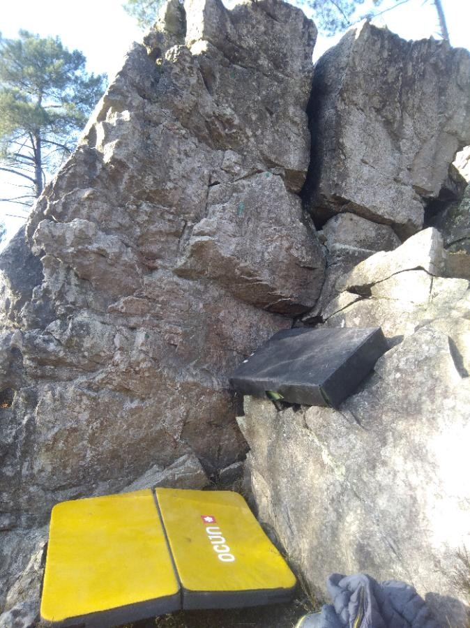
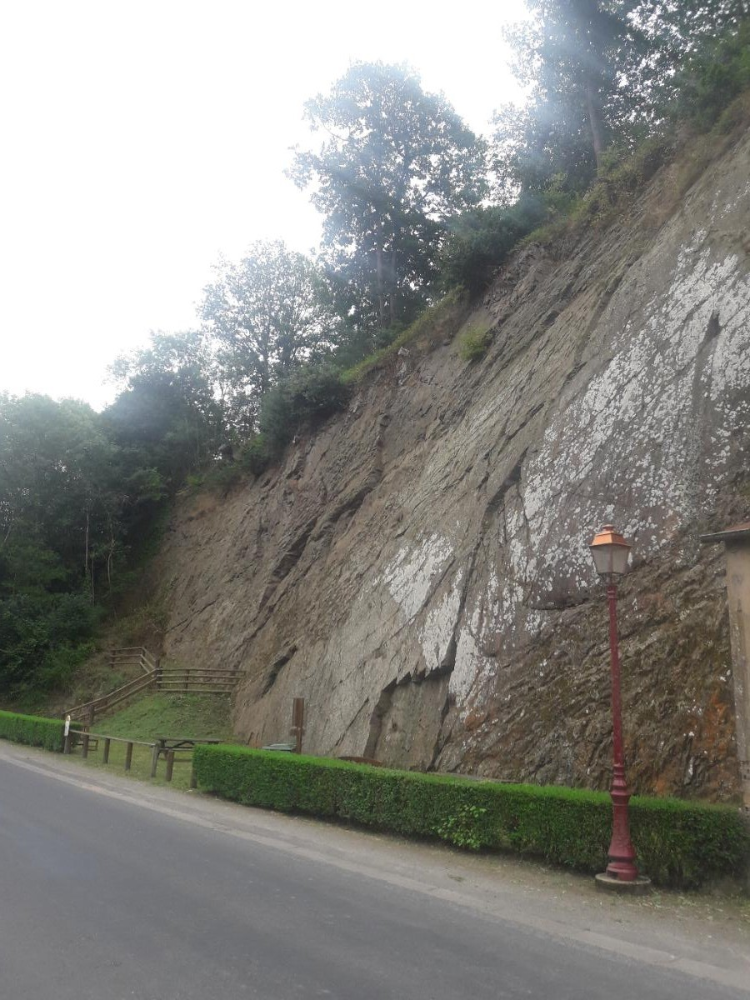

La Grande Fosse, Sillé-le-Guillaume

Saint-Léonard, Saint-Léonard-des-Bois
Sillé-le-Guillaume
- La Grande Fosse est réputée pour ses parois rocheuses imposantes et ses formations géologiques uniques, offrant des défis variés aux passionnés d'escalade. Les voies sont bien équipées et sécurisées, permettant aux grimpeurs de se concentrer pleinement sur leur ascension.
- Outre ses caractéristiques géologiques impressionnantes, La Grande Fosse offre également un cadre naturel exceptionnel. Niché dans une forêt luxuriante, le site offre une ambiance paisible et relaxante, parfaite pour se ressourcer en pleine nature tout en pratiquant son sport favori.
- Que ce soit pour une journée d'escalade en famille, une sortie entre amis ou une séance d'entraînement en solo, La Grande Fosse à Sillé-le-Guillaume promet une expérience inoubliable pour tous les amateurs d'escalade, dans un cadre naturel préservé et propice à l'aventure.
Saint-Léonard
- Le site d'escalade de Saint-Léonard en Sarthe est un des rares spot d'escalade en Sarthe pour les grimpeurs, offrant une expérience unique dans un cadre naturel préservé.
- Situé dans un paysage pittoresque de la Sarthe, ce site est caractérisé par ses parois rocheuses fascinantes et ses voies diverses adaptées à tous les niveaux de compétence.
- Que vous soyez débutant ou grimpeur expérimenté, vous trouverez des défis stimulants et des paysages à couper le souffle à Saint-Léonard. Avec une ambiance tranquille et une communauté passionnée, c'est l'endroit parfait pour explorer votre passion pour l'escalade tout en vous imprégnant de la beauté naturelle de la région.